În stînga este slide-ul din curs, în dreapta aceeași figură, calculată în browser din aceleași date. Butonul ▶ modifică parametrul pas cu pas.
Black–Scholes și senzitivitățile · Delta hedging în practică · Volatilitatea implicită și zîmbetul · Opțiunile Bitcoin și suprafața de volatilitate · VIX și prima de risc a varianței · Opțiuni cu zero zile pînă la scadență · Studiu de caz: sînt limitele din opțiuni valide și strînse?
Black–Scholes și senzitivitățile
Senzitivitățile: o identitate, toate derivatele
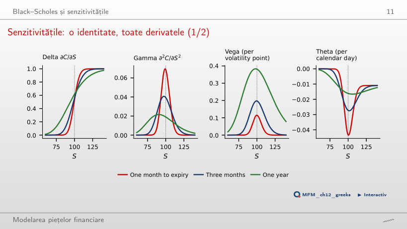
Răspuns
Call-ul pe o lună are cea mai mare gamma și cea mai mare theta la K = 100, iar call-ul pe un an are cea mai mare vega. Pentru o scadență dată, vega = ΓS²στ: la S = 100 și σ = 20%, call-ul pe trei luni are vega 0,197 pe punct de volatilitate.
Delta hedging în practică
Delta hedging discret: algoritm și eroare
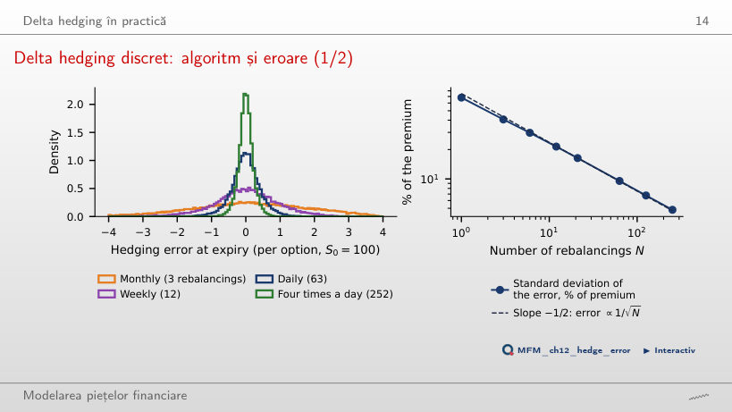
Răspuns
De aproximativ patru ori, pentru că abaterea standard scade ca 1/√N (panta estimată pe axele logaritmice este −0,48). Cu N = 252, adică de patru ori pe zi, abaterea standard este 4,8% din primă. Costurile de tranzacționare cresc însă proporțional cu N.
Vînzarea volatilității la 20%: trei rezultate
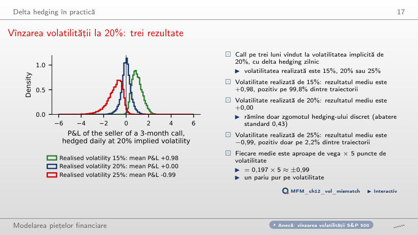
Răspuns
−0,99 pe opțiune, iar rezultatul este pozitiv doar pe 2,2% dintre traiectorii. Media este aproape de vega × 5 puncte de volatilitate = 0,197 × 5. Cu volatilitatea realizată de 15%, media este +0,98, pozitivă pe 99,8% dintre traiectorii.
Volatilitatea implicită și zîmbetul
Trei surse ale zîmbetului
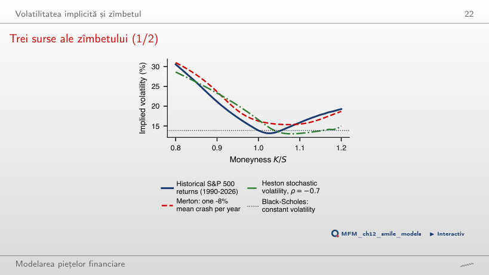
Răspuns
Salturile Merton: 31,0%, față de 16,3% ATM, aproape de distribuția istorică (30,6%, față de 13,9% ATM). Heston cu ρ = −0,7 dă 28,6%, iar aripa lui dreaptă este cea mai joasă (15,0% la K/S = 1,2), pentru că o corelație negativă înclină zîmbetul spre stînga.
Opțiunile Bitcoin și suprafața de volatilitate
Zîmbetul Bitcoin
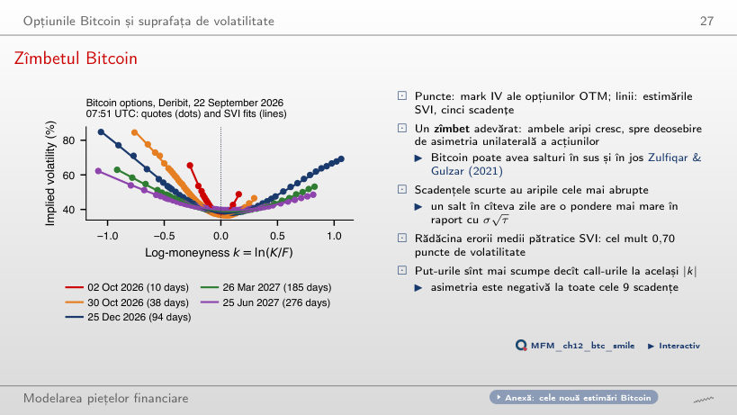
Răspuns
Nu. Ambele aripi cresc, pentru că Bitcoin poate sări atît în sus, cît și în jos. Opțiunile put sînt totuși mai scumpe decît call-urile la același |k|: skew-ul este negativ la toate cele 9 scadențe. Eroarea pătratică medie a ajustărilor SVI este de cel mult 0,70 puncte de volatilitate.
Distribuția neutră la risc a Bitcoin
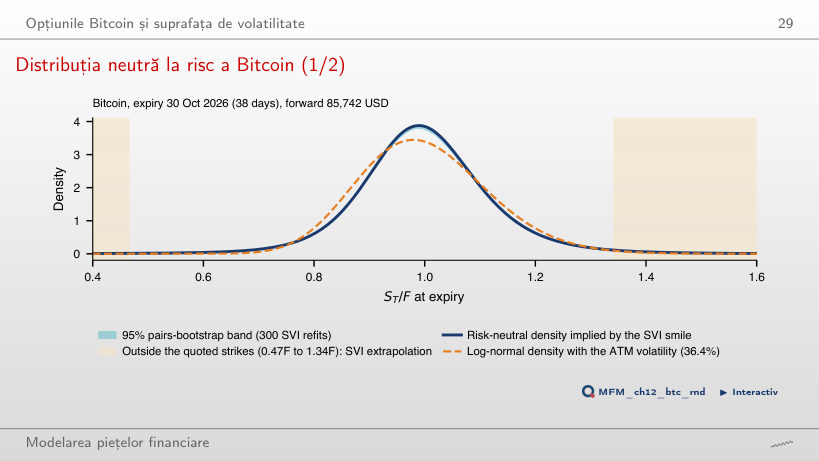
Răspuns
1,21%, cu intervalul bootstrap 1,08–1,24%, de aproximativ 8 ori mai mult decît 0,14% sub o distribuție log-normală cu volatilitatea ATM de 36,4%. 0,13 din cele 1,21 puncte se află sub cel mai mic preț de exercitare cotat (0,47F), unde densitatea este o extrapolare SVI.
VIX și prima de risc a varianței
VIX, 1990–2026
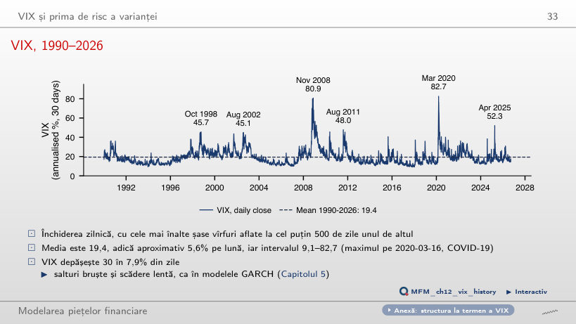
Răspuns
În 7,9% dintre zile. Media este 19,4, iar maximul, 82,7, a fost atins pe 16 martie 2020. Vîrfurile apar brusc și scad încet, ca în modelele GARCH.
Volatilitatea implicită față de cea realizată, S&P 500
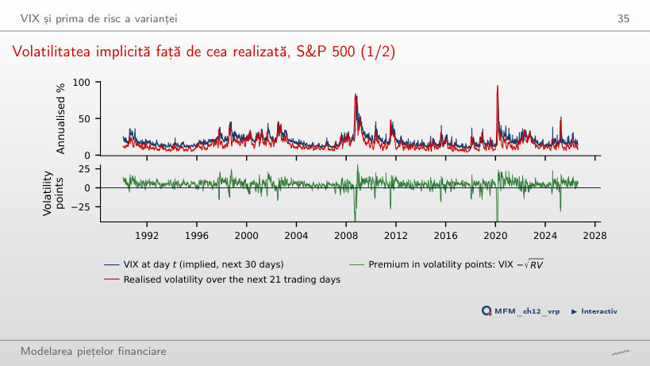
Răspuns
În 86% dintre zile. Prima medie este 4,09 puncte de volatilitate (eroarea standard Newey–West 0,27), adică 113 %² în varianță, cu t = 5,5. Excepțiile sînt crash-urile: cea mai slabă fereastră, începută pe 20 februarie 2020, are −72,0 puncte.
Calitatea VIX ca prognoză
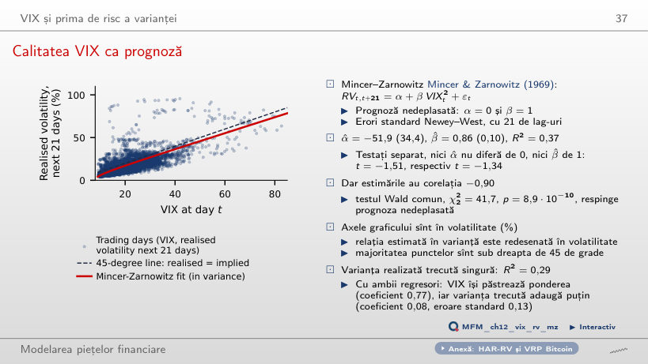
Răspuns
Nu. Cele două estimări au corelația −0,90, iar testul Wald comun dă χ²₂ = 41,7, cu p = 8,9·10⁻¹⁰. VIX explică R² = 0,37 din varianța realizată ulterior, iar varianța realizată trecută doar 0,29.
Opțiuni cu zero zile pînă la scadență
Gamma și erodarea în timp aproape de scadență
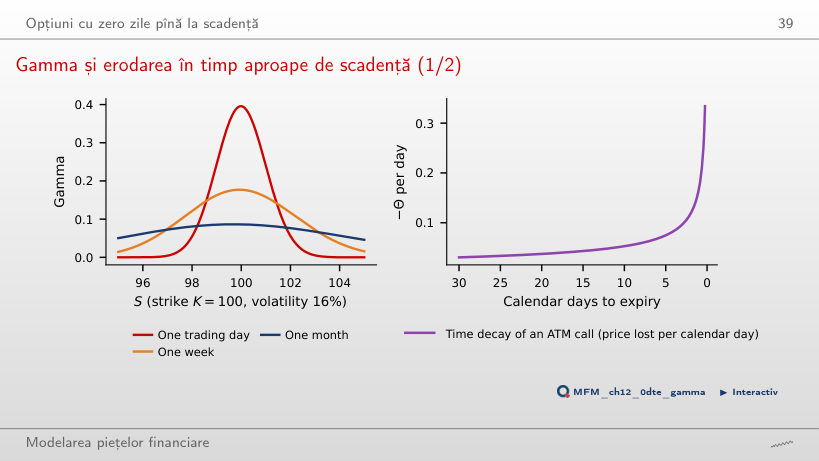
Răspuns
De 4,6 ori (0,396 față de 0,086), adică √21, pentru că gamma ATM este proporțională cu 1/√τ. O mișcare de 1% în ultima zi schimbă delta cu aproximativ 0,4. Time decay-ul este 0,167 în ultima zi calendaristică, față de 0,030 cu 30 de zile rămase.
Studiu de caz: sînt limitele din opțiuni valide și strînse?
Studiu de caz: limita și prima realizată
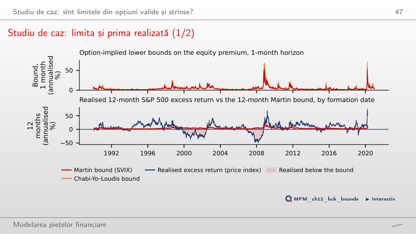
Răspuns
Nu. Limita restricționează media condiționată E_t[R^e], nu fiecare realizare. Lucrarea nu respinge validitatea (D₁ = 0 la toate orizonturile), dar respinge strîngerea: diferența medie dintre prima realizată și limită este de 4,8–5,2 puncte pe an. Corelația dintre limită și randamentul realizat este doar 0,15.
S&P 500 și VIX: închideri zilnice EODHD, 1990–2026. Opțiuni Bitcoin: instantaneul lanțului Deribit din 22 septembrie 2026, 07:51 UTC. Delta hedging: 20 000 de traiectorii ale mișcării browniene geometrice. Studiul de caz: limitele zilnice din pachetul de replicare Back, Crotty și Kazempour (2022); rata fără risc din Kenneth French Data Library.